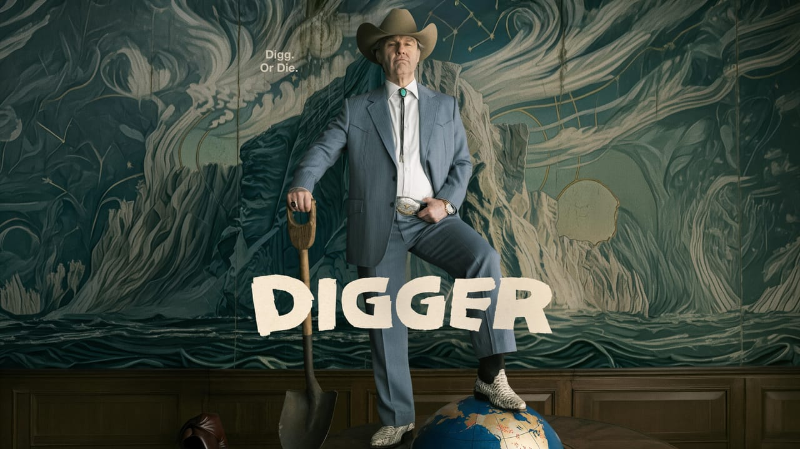

Digger: petróleo, velhice e encenação
Aviso: este texto revela a reviravolta da primeira metade do filme.
Digger não é o que você pensa que é.
Digger (2026), dirigido pelo mexicano Alejandro G. Iñárritu, duas vezes vencedor do Oscar de melhor direção, é uma comédia satírica que estrela Tom Cruise em uma versão um tanto quanto envelhecida de sua própria persona. No filme, ele se chama Curtis Markson, mas, dentro da peça que é retratada no filme, interpreta um bilionário excêntrico, egocêntrico e narcisista chamado Digger Rockwell. É o primeiro longa de Iñárritu falado em inglês desde O Regresso (2015).
Sim, isso mesmo que você leu. O filme se passa no decorrer de um ensaio e da exibição de uma peça teatral. Na primeira metade do filme, numa passagem um tanto quanto rápida e inesperada (e coloque inesperada nisso!), nos é revelado que aquilo não é a realidade, mas sim uma peça, e, numa virada ainda mais adiante, descobrimos que é uma peça descrevendo atos que aconteceram no universo dos personagens. Uau!
É realmente inesperado, e consegue-se até ver a reação de espanto dos espectadores na sessão. A virada acontece numa cena em que o personagem de Rockwell e o presidente, vivido por John Goodman, estão em um pensamento reflexivo sobre a iminente morte do presidente por câncer, em um jardim estranhamente perfeito, quando uma árvore cai! E nenhuma reação é expressa pelo personagem, mas vemos uma pessoa que, de primeira, parece quase um gigante, saindo de uma carapaça e consertando o cenário, que nos é revelado ser uma maquete.
E, a partir desse ponto, entendemos um pouco mais do universo onde tudo isso se passa. Rockwell, num relance, volta ao personagem de Markson, que é confrontado pela diretora da peça. O filme, que antes podia até ser considerado um filme de ação e comédia sobre como parar um iceberg (o que não seria longe do costumeiro de Cruise), se torna uma crítica sobre o próprio aquecimento global, a ganância humana e, em minha opinião, a gerontocracia em que vivemos atualmente.
Quem acompanha Iñárritu sente um déjà-vu aqui. Em Birdman (2014), ele já tinha nos levado para os bastidores de uma peça, e não por acaso: Digger foi escrito com os mesmos roteiristas daquele filme, Alexander Dinelaris e Nicolás Giacobone, ao lado da dramaturga Sabina Berman. Além disso, em Birdman, Michael Keaton, o ex-Batman, interpretava Riggan Thomson, um ator que não conseguia escapar da sombra do super-herói que um dia viveu no cinema. Em Digger, Tom Cruise, o maior astro de ação de sua geração, interpreta um ator que interpreta um magnata do petróleo. Nos dois casos, a escalação faz parte do texto: o filme sabe quem está na tela e usa isso. Ver Cruise velho, barrigudo e escondido debaixo de próteses, depois de décadas correndo, pendurado em aviões e salvando o mundo, já é uma piada antes de qualquer fala, e talvez a mais inteligente do filme.
Mas há uma diferença que me incomodou. Em Birdman, o palco era o lugar onde a ficção deixava de proteger o personagem: Riggan sobe em cena com uma arma de verdade, e a vida real invade a encenação. O teatro aumentava o que estava em jogo. Em Digger, fica a pergunta que me acompanhou até o fim da sessão: aqui, o palco aumenta ou dilui o que está em jogo? Volto a ela mais adiante.
Os personagens responsáveis pela trama são velhos, cafonas, rígidos, e tomam decisões extremamente controversas e “ridículas” pelo bem de seus próprios bolsos fundos, o que não é longe de se pensar quando olhamos a própria realidade. Independentemente de lado, esquerda ou direita, pra cima ou pra baixo, o filme acerta ao mostrar o poder concentrado nas mãos de homens que dificilmente entendem o mundo que governam e que não estarão aqui para viver as consequências das próprias decisões. Não por acaso, o presidente que decide o destino do planeta está morrendo: o futuro é decidido por quem não vai habitá-lo.
Rockwell louva a tradição petroleira de sua família, que na geração de seu avô cruzou o deserto texano em busca de petróleo e construiu um império que nega as provas de seus próprios frutos negativos à sociedade, vide o CO2 e o gás metano, que no filme é responsável por uma explosão que desencadeia diversos casos catastróficos ao redor do planeta. Quem é o culpado? A Rússia, a China, os Estados Unidos, as empresas, os pesquisadores... todos, menos Rockwell e o próprio presidente.
A comparação com Não Olhe Para Cima (2021), de Adam McKay, é inevitável, mesmo os alvos sendo diferentes. McKay mirava a negação coletiva: a mídia, os políticos e o público que se recusa a olhar para cima. Digger mira a origem: o poço, a família, o avô atravessando o deserto. A pergunta não é por que ninguém acredita na catástrofe, mas quem cavou o buraco, e o nome do protagonista (digger, em inglês, é quem cava) já responde.
O filme acerta em diversos aspectos: cenário, roteirização e a atuação de Cruise, que é de se louvar. Começo pelo roteiro. Sua maior ousadia é estrutural: são três camadas empilhadas (os fatos que aconteceram naquele universo, a peça que os reconstitui e o filme que nos mostra os bastidores dessa peça), e o texto nos faz atravessá-las sem aviso. A virada da árvore funciona porque não é anunciada: ela chega no meio de uma cena sobre doença e morte, justamente quando estamos mais desarmados. E há inteligência no jogo de empurra da culpa, em que todo mundo é acusado, menos os dois homens que de fato decidem. É uma piada que funciona na tela e continua funcionando fora dela, porque é exatamente assim que a culpa circula no mundo real. Não surpreende que uma dramaturga assine o texto ao lado de Iñárritu: Digger pensa como teatro, e seus personagens se revelam pelo que dizem de si mesmos, como Rockwell exaltando o avô e o petróleo.
Já Cruise merece o elogio. Próteses, cabelo branco ralo, barriga e um sotaque sulista carregado, e o astro desaparece debaixo de tudo isso. O mais difícil, porém, é a atuação dupla. Cruise interpreta Markson, um ator, que interpreta Rockwell, um magnata, e o filme exige que a gente perceba as duas camadas ao mesmo tempo. O instante em que, num relance, ele sai de Rockwell e volta a ser Markson diante da diretora é onde isso fica evidente. É o ator trabalhando dentro do ator.
A forma também merece atenção. Iñárritu volta a trabalhar com Emmanuel Lubezki, seu parceiro em Birdman e O Regresso, e o filme foi rodado em VistaVision, formato que corre o negativo de 35mm na horizontal e amplia a área e a definição da imagem. As lentes grande-angulares esticam os espaços e curvam levemente as bordas, e o resultado é um mundo que parece real e falso ao mesmo tempo. Pensando bem, o filme avisa desde cedo: aquele jardim estranhamente perfeito, onde Rockwell e o presidente conversam sobre a morte, já parecia um cenário antes de a árvore cair. A encenação antecipa a revelação; a forma sabe antes de nós que tudo aquilo é palco.
Mas preciso também destacar que talvez o âmbito cartunesco do filme, com essas câmeras de ângulo aberto que dão uma sensação cômica, mas também “assustadora”, faça a crítica perder um pouco de seu ponto mais forte, que é sobre as personalidades que nos levam ao abismo. O tópico pode ser engraçado, mas estamos falando de personalidades loucas com bombardeiros B-2 que, num ápice de loucura, cena do próprio filme, podem decidir bombardear a China porque está dando câncer ao personagem (?).
E aqui vale lembrar de Dr. Fantástico (1964). Kubrick também fez uma sátira cartunesca sobre homens de poder, bombardeiros e loucura, e o paralelo é quase literal: o general Jack D. Ripper manda atacar a União Soviética convencido de que os comunistas estão contaminando os “fluidos preciosos” do corpo americano. Não é muito diferente de bombardear a China por causa de um câncer. Kubrick começou adaptando um romance sério e concluiu que o assunto era absurdo demais para ser tratado sem riso, e mesmo assim Dr. Fantástico continua aterrorizante mais de sessenta anos depois. Então o problema de Digger não é o registro cartunesco em si: Kubrick prova que dá para rir do apocalipse e sair da sala com medo. A diferença é que, em Dr. Fantástico, as bombas caem e não há ninguém para consertar o cenário.
Talvez a sátira pudesse ser um pouco mais séria em consideração ao tópico que traz, não no tom, mas nas consequências. E parte da premissa da minha crítica é: para que transformar tudo isso numa peça teatral, como se fosse tudo falso? A partir do momento em que nos é revelado ser uma peça, o filme perde a urgência e a necessidade da crítica para mim. Afinal, é tudo uma peça, e nada disso realmente importa.
Digger transforma o distanciamento em ferramenta de plot: a revelação do palco é uma surpresa, um efeito, e a reação da plateia na minha sessão foi de espanto, não de reflexão. E aqui está, para mim, o ponto central. É verdade que a peça reconstitui fatos que aconteceram naquele universo, então nada ali é exatamente falso. Mas tudo chega até nós mediado, ensaiado, repetível. A imagem que define o filme é a do contrarregra que parecia um gigante consertando a árvore: no palco, a catástrofe tem conserto, alguém entra e põe tudo no lugar. É exatamente isso que o aquecimento global não tem. Respondendo à pergunta que deixei lá atrás: em Birdman, o palco aumentava o que estava em jogo, já em Digger, ele dilui.
Digger é um filme divertido com uma crítica necessária, mas, ao levar a mesma crítica pelo lado bobo e, sobretudo, para um palco onde tudo tem conserto, se perde um pouco. Não deixa de ser uma obra louvável e boa, só não entra no rol de filmes do ano.